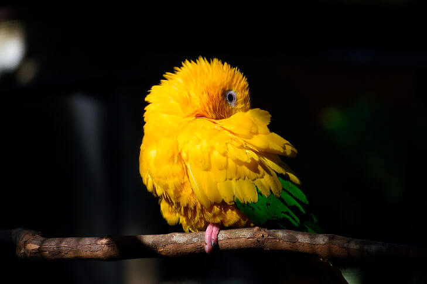
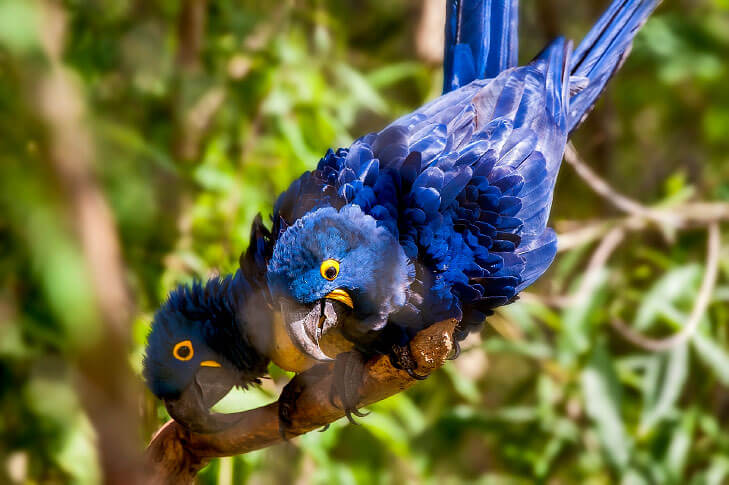
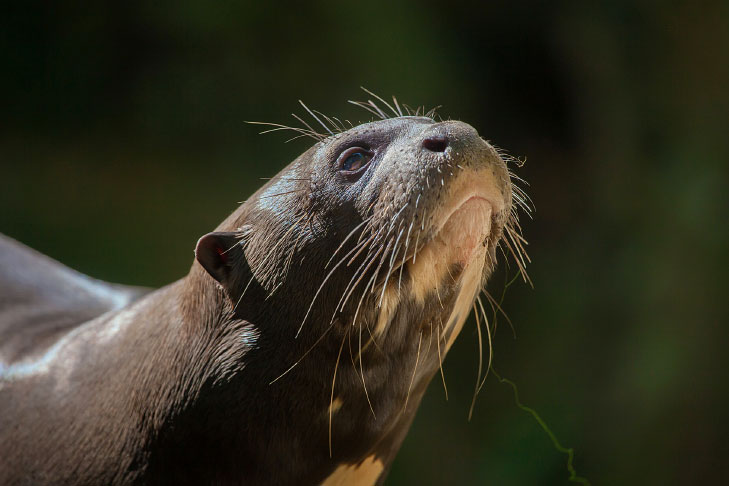

Animais em extinção no Brasil
Existem mais de mil espécies em risco de extinção, segundo o Ministério do Meio Ambiente (MMA) e o Instituto Chico Mendes de Conservação da Biodiversidade (ICMBio).
As causas para os desaparecimentos das espécies são por tráfico de animais, queimadas, desmatamento, construção de hidrelétricas, poluição e caça predatória, que afetam diretamente seu habitat, reduzindo suas chances de sobrevivência.
Segundo estudos, o Brasil lidera o ranking com maior número de espécies de aves em extinção, com a Indonésia em segundo lugar.
Confira uma lista de espécies com possíveis extinções.
Araraju
Também conhecida como Guaruba, a ararajuba é uma ave verde e amarela, que vem sofrendo com o tráfico e o desmatamento. Sua espécie vive na Amazônia, mas pouco se sabe sobre seus hábitos, o que torna ainda mais difícil sua conservação.
Arara Azul
Espécie encontrada na Amazônia e Pantanal, dona de um azul sem igual. Ave cobiçada por caçadores, já que suas asas possuem grande valor no mercado internacional.
Atualmente, sofre com o tráfico de animais, caça ilegal e o desmatamento de seu habitat.
Ariranha
Conhecida como lobo do rio ou lontra gigante, a ariranha está sendo ameaçada de extinção devido a caça ilegal, poluição dos rios e pesca predatória, mas, principalmente, a contaminação por mercúrio, que são as maiores ameaças para a conservação da espécie. É encontrada no Pantanal e Amazônia.
Cervo-do-pantanal
É o maior cervídeo da América do Sul e é encontrado no Pantanal, mas também vive nos biomas da Amazônia e Cerrado. A construção das hidrelétricas, o desmatamento e a caça ilegal tem sido uma grande ameaça para essa espécie.